What is in front of you
Collectibles, trinkets, cards, runes, Soul Stones and known pills. Native artwork, quality, active charges, single-use warnings and live transformation progress.
External Item Descriptions, adapted for the native iOS game. See what a pickup does before you take it, with descriptions that understand your character, inventory and current floor.
REAL NATIVE iOS GAMEPLAYREPENTANCE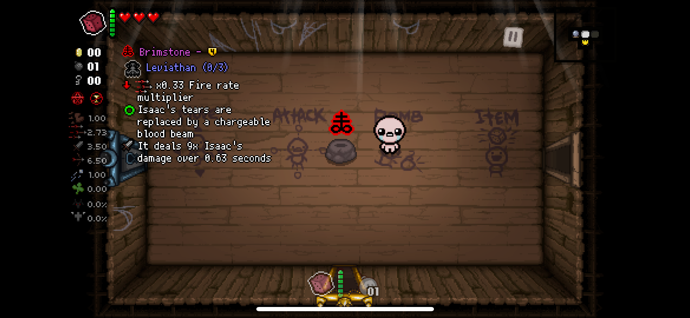
Descriptions change with your run. The overlay stays out of your controls and opens up when you need a closer look.
Collectibles, trinkets, cards, runes, Soul Stones and known pills. Native artwork, quality, active charges, single-use warnings and live transformation progress.
Lost and Keeper health rules, Birthright, weapon overrides, Car Battery, Tarot Cloth, Book of Virtues wisps, Abyss locusts and current Luck chances.
Spindown results, Flip alternatives and Glitched Crown browsing. Pandora’s Box highlights this floor’s reward. Optional random-result spoilers stay off by default.
Personal items, duplicate counts, swallowed trinkets, absorbed Void actives and transformations. Inspect D Infinity’s dice without using or switching the active item.
Original bitmap fonts and sprite metrics, colored markup and modular descriptions. Adjustable width, scale, position and opacity, with a readable backdrop on pause.
Question-mark collectibles stay hidden, including Curse of the Blind. Visible active items left after swapping can still be described. Card visibility follows native shop, Options and reachability rules. Unidentified pills never reveal their effects.
Dice Rooms, live Sacrifice Room steps, Sanguine Bond, Greed-mode changes, collection-page reminders, save-aware unlock hints, PHD / False PHD, Wild Card, Vurp!, The Stars?, Black Feather, duplicate-item and charging interactions.
Character-specific salvage descriptions and a Bag of Crafting ingredient view. At eight ingredients, inspect the game’s cached result; browsing does not craft or spend anything. Personal inventory and transformation views keep native players separate.
RNG predictions, exact Void / Black Rune stat previews and hidden current effects are independent switches, all off by default. Spindown’s deterministic ID chain is not gated by the RNG switch.
Fresh 1.0.0 screenshots from native iOS Repentance. Open a picture for the full-resolution original.
Brimstone with the original pixel font, native artwork, quality and live Leviathan progress.
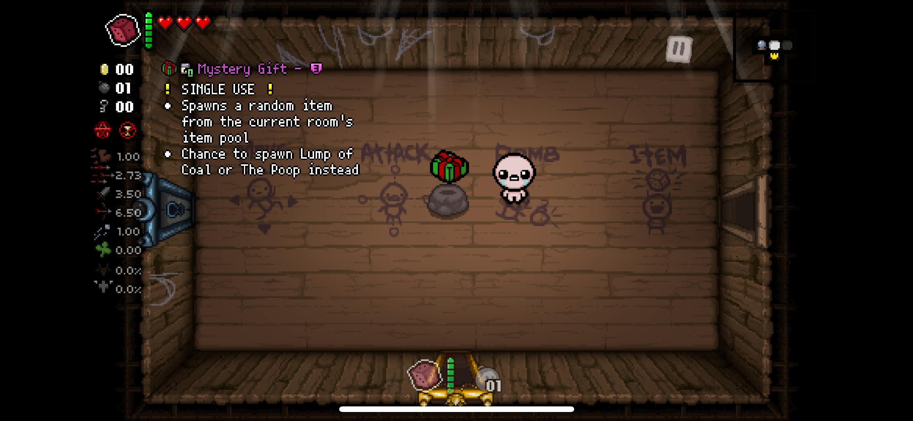
Mystery Gift carries the original SINGLE USE warning, alongside its active-item charge indicator.
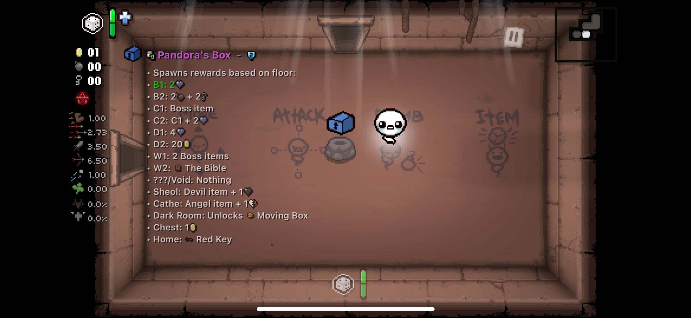
Pandora’s Box lists its rewards and highlights the current Basement I payout in green.
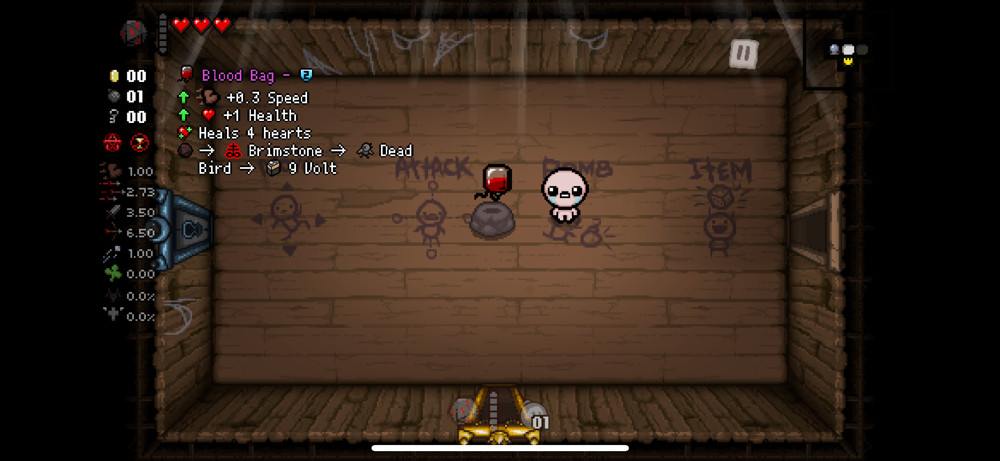
Spindown Dice shows three eligible ID-based results, connected by arrows. Unavailable candidates are skipped.
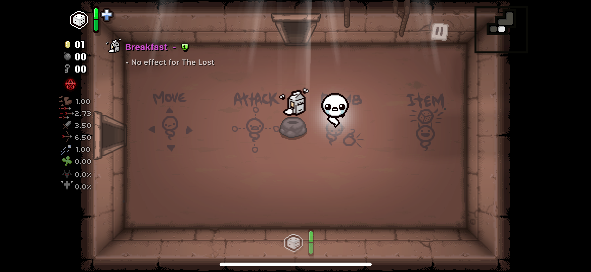
Breakfast says No effect for The Lost instead of suggesting an irrelevant health increase.
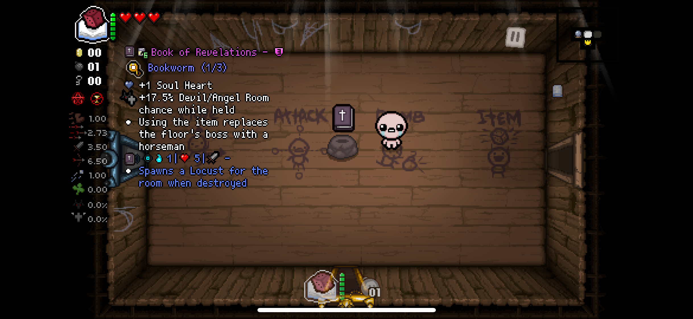
Book of Revelations includes Book of Virtues wisp statistics and special behavior.
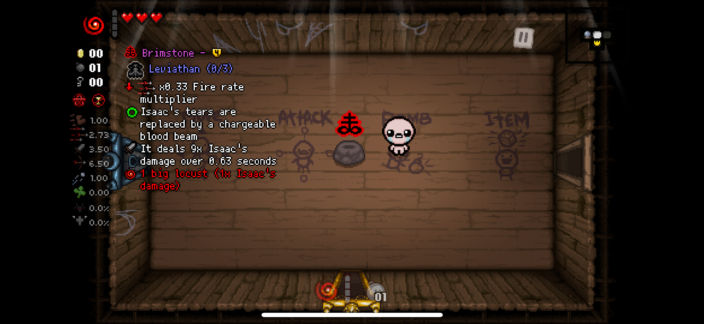
With Abyss held, Brimstone shows its special locust and damage multiplier.
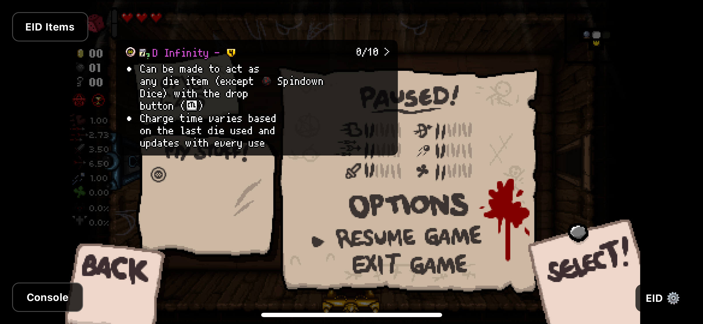
D Infinity in the pause inventory has a readable backdrop and a tap-to-browse 0/10 counter. Browsing does not change the active die.
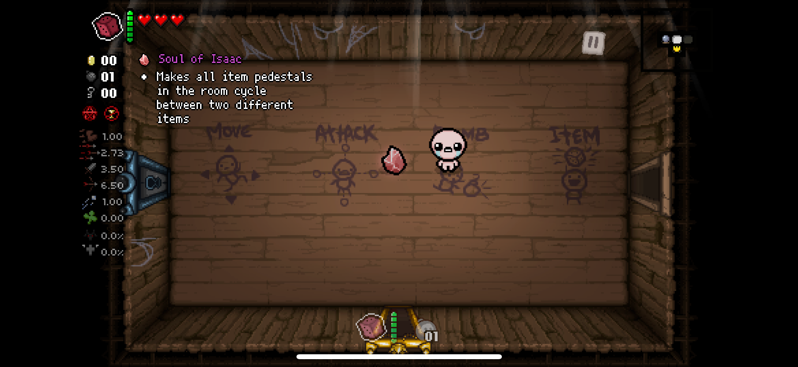
Soul of Isaac uses its own icon and description, alongside support for cards, runes and identified pills.
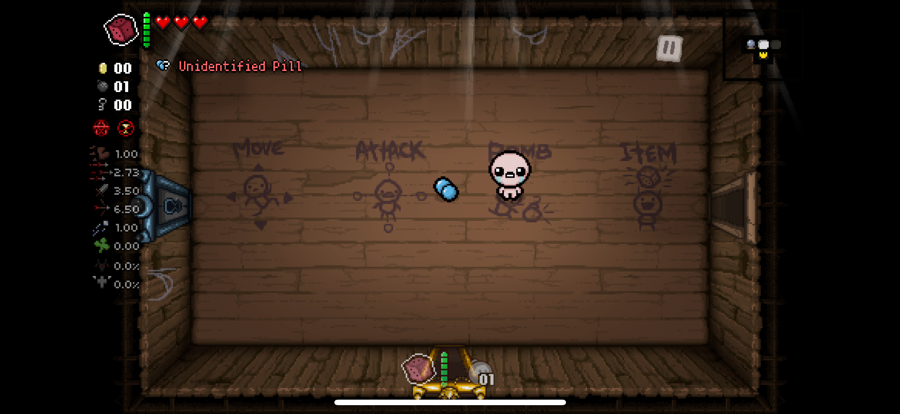
An unidentified pill shows its real color, a question-mark overlay and a red title, without revealing its effect.
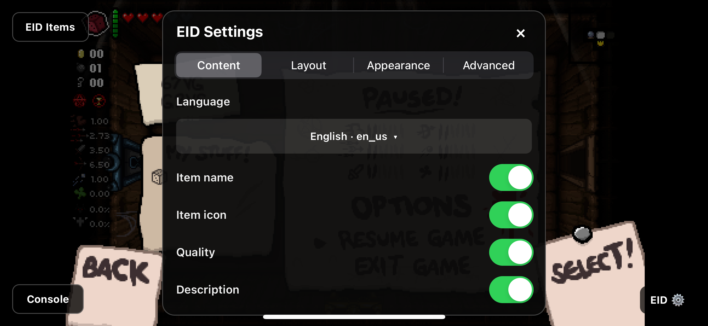
All 20 EID languages are available. Settings and EID Items follow the selected description language.
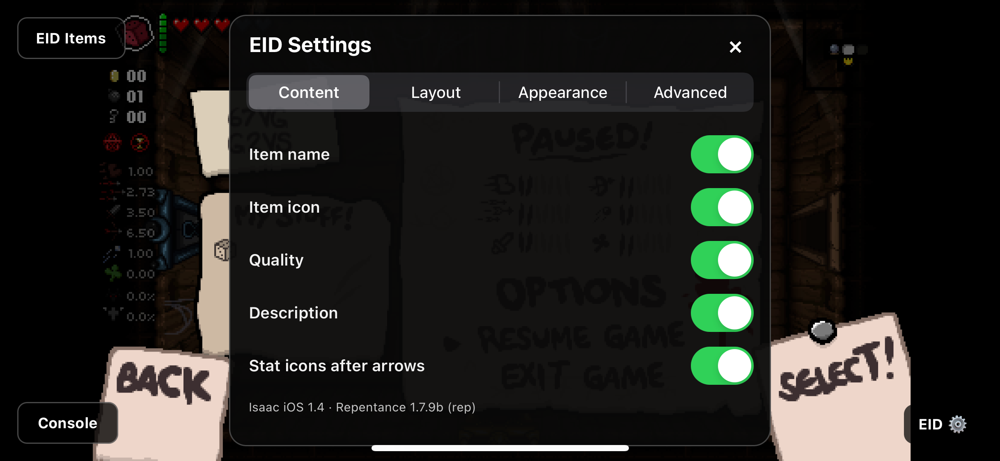
Control item names, icons, quality, descriptions and stat icons after arrows.
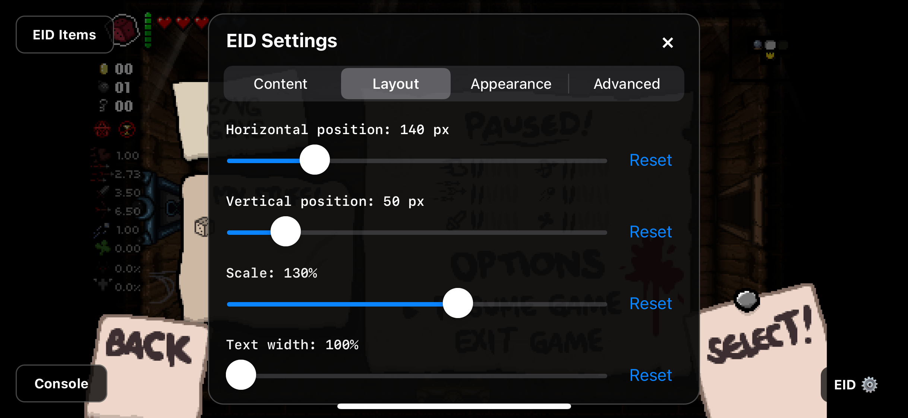
Adjust position, scale and text width. Every slider has an individual Reset button.
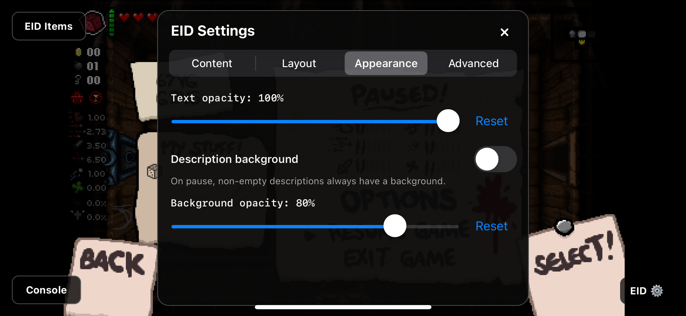
Adjust text and background opacity. Non-empty descriptions always gain contrast while paused.
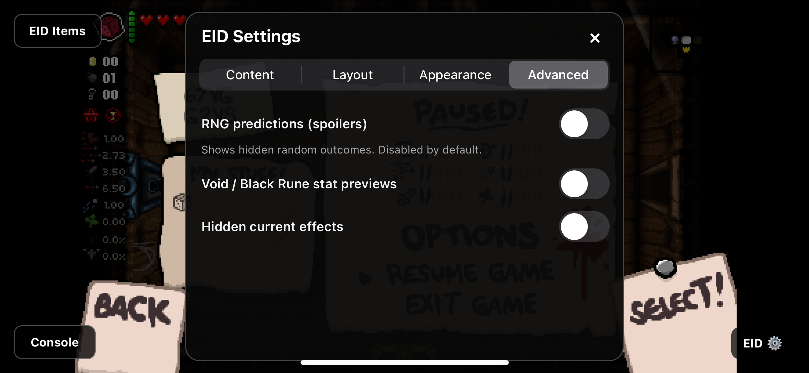
RNG predictions, Void / Black Rune stat previews and hidden current effects are separate options, all off by default.
The Console button in some pause screenshots belongs to the separate Debug Console mod. It is not included in EID.
Descriptions, fonts and EID artwork are included. Use one loading method per Isaac installation.
Release files and checksums are available on GitHub
ElleKit injection for the already-installed native game. Install the package and restart Isaac.
Download DEB ↓The framework and complete resources. Assign it to Isaac’s own Tweak Folder, not Global Tweaks.
Download framework ↓The dylib plus IsaacEID.bundle. Embed both, then sign the complete application with your signing setup.
Download package ↓No Steam account or separate database generation is needed.
IsaacExternalItemDescriptions-rootless.deb with your package manager.LiveContainer.framework.zip archive.IsaacEID.bundle.This is an EID adaptation, not a Windows Lua-mod loader. It supports the verified native iOS executable and leaves unknown builds untouched.
Implemented behavior and remaining scope ↗No. It brings original EID descriptions, fonts and many contextual features to native iOS. General crafting recipe search, every co-op/subplayer rule, arbitrary Lua callbacks and every prediction are not implemented. One nearby eligible description is shown at a time.
The dylib uses public iOS frameworks and has no jailbreak-only library dependency. LiveContainer and signed embedding are provided. Direct embedding still requires code-signing the complete application; this is not an App Store app.
Hidden-item protection is retained. Browsing descriptions is read-only: it does not activate items, unlock achievements, advance game RNG or edit save files. The three optional spoiler controls start off unless you have explicitly saved a different preference.
You choose EID’s language independently. Its settings and inventory follow that choice; missing description translations fall back to English. Position, size, width and opacity are adjustable, and each slider has its own reset.
No game IPA, executable, save, extracted game artwork or purchase bypass is distributed. Game item artwork is read from the installed game. Console is a separate mod, visible in some supplied screenshots but not part of EID.
First restart Isaac and check that only one EID copy is loaded with its matching resources. Include your game version, loading method, item ID and a screenshot in a GitHub issue. Every character, language and device combination has not been exhaustively replayed.
Huge thanks to wofsauge and every External Item Descriptions contributor and translator. The descriptions and EID resources are included with the original author’s permission and retain their attribution. Font creators, including itouhiro and the M+ FONTS PROJECT, are credited in the project notices.